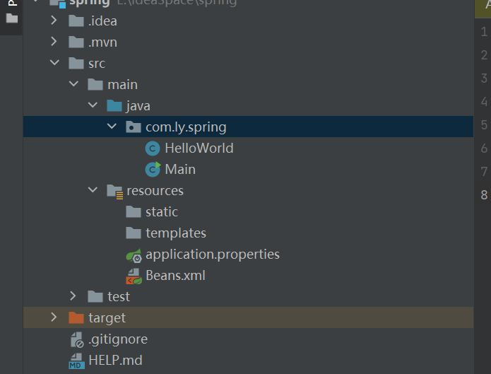

Spring--IOC容器1. IOC容器2. Spring工作的高级视图3. 两种容器1. Spring BeanFactory容器4. Spring Bean定义4.1 Bean 与 Spring 容器之间的关系4.2 Spring 配置元数据5 Spring Bean的作用域5.1 Bean 的作用域5.2 singleton 作用域5.3 prototype 作用域6 Spring Bean 的生命周期6.1 Bean 的生命周期6.2 初始化回调及销毁回调7 Spring Bean 后置处理器7.1 Spring Bean 后置处理器7.2 注意事项7.3 示例8 Spring Bean 定义继承8.1 定义继承8.2 示例8.3 Bean 定义模板
Spring IOC 容器利用 Java 的 POJO 类和配置元数据来生成完全配置和可执行的系统或应用程序
是最简单的容器，为DI 提供基本的支持
用 org.springframework.beans.factory.BeanFactory 接口来定义
BeanFactory 或者相关接口（BeanFactoryAware、DisposableBean 等）在 Spring 中仍然存在大量的与 Spring 整合的第三方框架的反向兼容性的目的
在 Spring 中，有大量对BeanFactory 接口的实现，其中，最常被使用的是 XmlBeanFactory 类。这个容器从一个 XML 文件中读取配置元数据，由这些元数据来生成一个被配置化的系统或者应用
在资源宝贵的移动设备或基于 applet 的应用当中，BeanFactory会被优先选择；否则，一般使用的是ApplicationContext
示例

xxxxxxxxxx191package com.ly.spring;2
3/**4 * 测试类5 */6public class HelloWorld {7
8 private String message;9
10 public void setMessage(String message) {11 this.message = message;12 }13
14 public void getMessage() {15 System.out.println("the message is " + message);16 }17
18}19
xxxxxxxxxx201package com.ly.spring;2import org.springframework.context.ApplicationContext;4import org.springframework.context.support.ClassPathXmlApplicationContext;5/**7* 主类8*/9public class Main {10public static void main(String[] args) {12//获取上下文对象13ApplicationContext context = new ClassPathXmlApplicationContext("Beans.xml");14//IOC15HelloWorld helloWorld = (HelloWorld) context.getBean("helloWorld");16//输出17helloWorld.getMessage();18}19}20
xxxxxxxxxx91 2<beans xmlns="http://www.springframework.org/schema/beans"3 xmlns:xsi="http://www.w3.org/2001/XMLSchema-instance"4 xsi:schemaLocation="http://www.springframework.org/schema/beans http://www.springframework.org/schema/beans/spring-beans.xsd">5 6 <bean id="helloWorld" class="com.ly.spring.HelloWorld">7 <property name="message" value="Hello World"></property>8 </bean>9</beans>2. Spring ApplicationContext 容器
示例
HelloWorld.java和Beans.xml与之前相同，只有Main.java有一点不同
xxxxxxxxxx201package com.ly.spring;2
3import org.springframework.context.ApplicationContext;4import org.springframework.context.support.FileSystemXmlApplicationContext;5
6/**7 * 主类8 */9public class Main {10
11 public static void main(String[] args) {12 //获取上下文对象13 ApplicationContext context = new FileSystemXmlApplicationContext("E:\\IdeaSpace\\spring\\src\\main\\resources\\Beans.xml");14 //IOC15 HelloWorld helloWorld = (HelloWorld) context.getBean("helloWorld");16 //输出17 helloWorld.getMessage();18 }19}20
被称作 bean 的对象是构成应用程序的支柱，也是有 Spring IoC 管理的
bean 是一个被实例化、组装并通过 Spring IoC 容器所管理的对象，这些 bean 是由用容器提供的配置元数据创建的
bean 定义包含称为配置元素的信息
Spring IoC 容器完全由实际编写的配置元数据的格式解耦，配置元数据提供给 Spring 容器的方法有三种，即基于 XML 的配置文件、基于注解的配置、基于 Java 的配置
基于 XML 的配置示例
xxxxxxxxxx281 2<beans xmlns="http://www.springframework.org/schema/beans"3 xmlns:xsi="http://www.w3.org/2001/XMLSchema-instance"4 xsi:schemaLocation="http://www.springframework.org/schema/beans http://www.springframework.org/schema/beans/spring-beans.xsd">5 6 <!-- A simple bean definition -->7 <bean id="..." class="...">8 <!-- collaborators abd configuration for this bean go here-->9 </bean>10 11 <!-- A bean definition with lazy init set on-->12 <bean id="..." class="..." lazy-init="true">13 <!-- collaborators abd configuration for this bean go here-->14 </bean>15 16 <!-- A bean definition with initialization method -->17 <bean id="..." class="..." init-method="...">18 <!-- collaborators abd configuration for this bean go here-->19 </bean>20 21 <!-- A bean definition with destruction method -->22 <bean id="..." class="..." destroy-method="...">23 <!-- collaborators abd configuration for this bean go here-->24 </bean>25 26 <!-- more bean definitions go here -->27 28</beans>上述示例中：
xxxxxxxxxx21+ `xmlns="http://www.springframework.org/schema/beans"`，默认为命名空间，它没有空间名，用于 Spring Bean 的定义2+ `xmlns:xsi="http://www.w3.org/2001/XMLSchema-instance"`，xsi 命名空间，这个命名空间用于为每个文档中命名空间指定相应的 Schema 样式文件，是标准组织定义的标准命名空间
当在 Spring 中定义一个 bean 时，必须声明该 bean 的作用域选项
Spring 框架支持5中作用域
xxxxxxxxxx41 <!-- A bean definition with singleton scope-->2 <bean id="..." class="..." scope="singleton">3 <!-- collaborators abd configuration for this bean go here-->4 </bean>xxxxxxxxxx41 <!-- A bean definition with prototype scope-->2 <bean id="..." class="..." scope="prototype">3 <!-- collaborators abd configuration for this bean go here-->4 </bean>示例
目录结构：
BeanDemo.java代码，主要测试类
xxxxxxxxxx261package com.ly.spring;2
3/**4 * 测试 Bean 的 init-method 及 destory-method5 */6public class BeanDemo {7 private String message;8
9 public void setMessage(String message) {10 this.message = message;11 }12
13 public void getMessage() {14 System.out.println("ths message is "+message);15 }16
17 public void init() {18 System.out.println("init method is starting");19 }20
21 public void destory() {22 System.out.println("destory method is starting");23 }24
25}26
Main.java，主方法类
xxxxxxxxxx161package com.ly.spring;2
3import org.springframework.context.support.AbstractApplicationContext;4import org.springframework.context.support.ClassPathXmlApplicationContext;5
6public class Main {7
8 public static void main(String[] args) {9 AbstractApplicationContext context = new ClassPathXmlApplicationContext("Beans.xml");10 BeanDemo beanDemo = (BeanDemo) context.getBean("beanDemo"); //创建11 beanDemo.getMessage();12 context.registerShutdownHook(); //销毁13 }14
15}16
Bean.xml
xxxxxxxxxx91 2<beans xmlns="http://www.springframework.org/schema/beans"3 xmlns:xsi="http://www.w3.org/2001/XMLSchema-instance"4 xsi:schemaLocation="http://www.springframework.org/schema/beans http://www.springframework.org/schema/beans/spring-beans.xsd">5
6 <bean id="beanDemo" class="com.ly.spring.BeanDemo" init-method="init" destroy-method="destory">7 <property name="message" value="hello bean"></property>8 </bean>9</beans>执行结果
如果有太多具有相同名称的初始化或者销毁方法的 Bean，那么不需要在每一个 Bean 上声明初始化方法和销毁方法，框架使用元素中的 default-init-method 和 default-destory-method 属性提供了灵活的配置，如下
xxxxxxxxxx131 2<beans xmlns="http://www.springframework.org/schema/beans"3 xmlns:xsi="http://www.w3.org/2001/XMLSchema-instance"4 xsi:schemaLocation="http://www.springframework.org/schema/beans 5 http://www.springframework.org/schema/beans/spring-beans.xsd"6 default-init-method="init"7 default-destroy-method="destory"8>9
10 <bean id="..." class="...">11 <!-- collaborators and configuration for this bean go here -->12 </bean>13</beans>BeanPostProcessor 接口定义回调方法，可以实现该方法来提供自己的实例化逻辑、依赖解析逻辑等；也可以在 spring 容器通过插入一个或多个 BeanPostProcessor 的实现来完成实例化，配置和初始化一个 Bean 之后实现一些自定义逻辑回调方法。BeanPostProcessor 接口，通过设置 BeanPostProcessor 实现的 Ordered 接口提供的 order 属性来控制这些 BeanPostProcessor 接口的执行顺序BeanPostProcessor 可以对 bean （或对象）实例进行操作，这意味着 Spring IOC 容器实例化一个 bean 实例，然后 BeanPostProcessor 接口进行它们的工作ApplicationContext 会自动检测由 BeanPostProcessor 接口的实现定义的 bean，注册这些 bean 为后置处理器，然后通过在容器中创建 bean ，在适当的时候调用它BeanPostProcessor 接口实现类中，要实现两个抽象方法，分别为BeanPostProcessor.postProcessBeforeInitialization(Object, String) 和 BeanPostProcessor.postProcessAfterInitialization(Object, String)目录结构
BeanDemo.java，与测试初始化回调及销毁回调代码相同
xxxxxxxxxx261package com.ly.spring;2
3/**4 * 正常的Bean执行5 */6public class BeanDemo {7 private String message;8
9 public void setMessage(String message) {10 this.message = message;11 }12
13 public void getMessage() {14 System.out.println("ths message is "+message);15 }16
17 public void init() {18 System.out.println("init method is starting");19 }20
21 public void destory() {22 System.out.println("destory method is starting");23 }24
25}26
InitBeanDemo.java，测试两个方法
xxxxxxxxxx371package com.ly.spring;2
3
4import org.springframework.beans.BeansException;5import org.springframework.beans.factory.config.BeanPostProcessor;6
7/**8 * 测试两个方法9 */10public class InitBeanDemo implements BeanPostProcessor {11
12 /**13 * 初始化之前执行14 * @param bean15 * @param beanName16 * @return17 * @throws BeansException18 */19 public Object postProcessBeforeInitialization(Object bean, String beanName) throws BeansException {20 System.out.println("BeforeInitialization：" + beanName);21 return bean;22 }23
24 /**25 * 初始化之后执行26 * @param bean27 * @param beanName28 * @return29 * @throws BeansException30 */31 public Object postProcessAfterInitialization(Object bean, String beanName) throws BeansException {32 System.out.println("AfterInitialization："+beanName);33 return bean;34 }35
36}37
Main.java，主方法
xxxxxxxxxx161package com.ly.spring;2
3import org.springframework.context.support.AbstractApplicationContext;4import org.springframework.context.support.ClassPathXmlApplicationContext;5
6public class Main {7
8 public static void main(String[] args) {9 AbstractApplicationContext context = new ClassPathXmlApplicationContext("Beans.xml");10 BeanDemo beanDemo = (BeanDemo) context.getBean("beanDemo"); //创建11 beanDemo.getMessage();12 context.registerShutdownHook(); //销毁13 }14
15}16
Bean.xml
xxxxxxxxxx121 2<beans xmlns="http://www.springframework.org/schema/beans"3 xmlns:xsi="http://www.w3.org/2001/XMLSchema-instance"4 xsi:schemaLocation="http://www.springframework.org/schema/beans5 http://www.springframework.org/schema/beans/spring-beans.xsd">6
7 <bean id="beanDemo" class="com.ly.spring.BeanDemo" init-method="init" destroy-method="destory">8 <property name="message" value="hello bean"></property>9 </bean>10
11 <bean class="com.ly.spring.InitBeanDemo"></bean>12</beans>运行结果
子 bean 继承父 bean，同时修改自己的属性 message3 和继承自父 bean 的属性 message1
Beans.xml
181 2<beans xmlns="http://www.springframework.org/schema/beans"3 xmlns:xsi="http://www.w3.org/2001/XMLSchema-instance"4 xsi:schemaLocation="http://www.springframework.org/schema/beans5 http://www.springframework.org/schema/beans/spring-beans.xsd">6
7 <bean id="beanFather" class="com.ly.spring.BeanFather" >8 <property name="message1" value="BeanFather message1"></property>9 <property name="message2" value="BeanFather message2"></property>10 </bean>11
12 <!--子 bean 继承父 bean，同时修改继承自父 bean 的message1-->13 <bean id="beanChildren" class="com.ly.spring.BeanChildren" parent="beanFather">14 <property name="message1" value="BeanChildren message1"></property>15 <property name="message3" value="BeanChildren message3"></property>16 </bean>17
18</beans>BeanFather.java--父 bean
261package com.ly.spring;2
3/**4 * 父 bean5 */6public class BeanFather {7 private String message1;8 private String message2;9
10 public void setMessage1(String message) {11 this.message1 = message;12 }13
14 public void setMessage2(String message) {15 this.message2 = message;16 }17
18 public void getMessage1() {19 System.out.println("ths BeanFather message1 is "+message1);20 }21
22 public void getMessage2() {23 System.out.println("ths BeanFather message2 is "+message2);24 }25}26
BeanChilder.java--子bean
351package com.ly.spring;2
3/**4 * 子 bean5 */6public class BeanChildren {7 private String message1;8 private String message2;9 private String message3;10
11 public void setMessage1(String message) {12 this.message1 = message;13 }14
15 public void setMessage2(String message) {16 this.message2 = message;17 }18
19 public void setMessage3(String message) {20 this.message3 = message;21 }22
23 public void getMessage1() {24 System.out.println("ths BeanChildren message1 is " + message1);25 }26
27 public void getMessage2() {28 System.out.println("ths BeanChildren message2 is " + message2);29 }30
31 public void getMessage3() {32 System.out.println("ths BeanChildren message3 is " + message3);33 }34}35
Main.java
231package com.ly.spring;2
3import org.springframework.context.support.AbstractApplicationContext;4import org.springframework.context.support.ClassPathXmlApplicationContext;5
6public class Main {7
8 public static void main(String[] args) {9 AbstractApplicationContext context = new ClassPathXmlApplicationContext("Beans.xml");10 //父bean输出11 BeanFather beanFather = (BeanFather) context.getBean("beanFather");12 beanFather.getMessage1();13 beanFather.getMessage2();14
15 //子bean输出16 BeanChildren beanChildren = (BeanChildren) context.getBean("beanChildren");17 beanChildren.getMessage1();18 beanChildren.getMessage2();19 beanChildren.getMessage3();20 }21
22}23
运行结果：
可以创建一个 Bean 的定义模板，不需要花太多精力它就可以被其他子 bean 定义使用
在定义一个 Bean 定义模板时，不应该指定类的属性，而应该指定带有 true 值得抽象属性
xxxxxxxxxx191 2<beans xmlns="http://www.springframework.org/schema/beans"3 xmlns:xsi="http://www.w3.org/2001/XMLSchema-instance"4 xsi:schemaLocation="http://www.springframework.org/schema/beans5 http://www.springframework.org/schema/beans/spring-beans.xsd">6
7 <bean id="beanTeamplate" abstract="true">8 <property name="message1" value="Mr.Zhang"></property>9 <property name="message2" value="Mr.Liu"></property>10 <property name="message3" value="Mr.Wang"></property>11 </bean>12
13 <!--子 bean 继承父 bean，同时修改继承自父 bean 的message1和message3-->14 <bean id="beanChildren" class="com.ly.spring.BeanChildren" parent="beanTeamplate">15 <property name="message1" value="BeanChildren message1"></property>16 <property name="message3" value="BeanChildren message3"></property>17 </bean>18
19</beans>